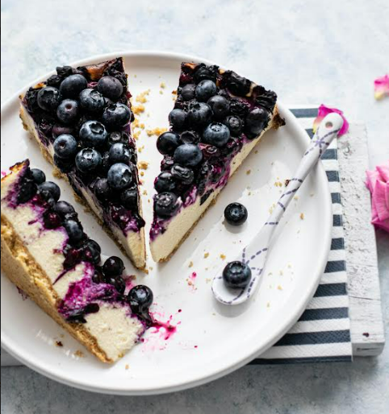

Indulge in a slice of lemon and ginger cheesecake, where zesty lemon meets the
warmth of
ginger
in a
velvety delight. With each bite, a symphony of flavours unfolds, leaving a
lingering
sweetness
that
pairs beautifully with a cup of tea, creating a perfect harmony of zest and
spice.
Lemon and Ginger Cheesecake
Ingredients
180g Ginger biscuits
60g Butter
8 tbsp Caster sugar
300g Cream cheese (the cheaper the better as it will have less
flavour.)
33 cl Double cream
2-3 tbsp Lemon curd
2 tbsp Lemon juice
Instructions
Crush 180 grams of biscuits in a plastic bag with a rolling pin, the
back
of a spoon or whatever is handy.
Melt 60 grams of butter in a saucepan.
Mix in 3 table spoons of caster sugar into the crushed biscuits,
then
add this mixture to the butter, stir until the biscuit is all coated
with
butter.
Pour into a cake tin with a removable bottom or multiple mini tins
with
removable bottoms, and compact it firmly to create a sturdy biscuit
base.
Place this in the fried to cool while you get on with the top half of
your
cheesecake.
Whip 33cl of double cream in a bowl until it thickens
vi . Place 300 grams of cream cheese, 5 table spoons of caster sugar
and 2
tablespoons of lemon juice in a separate bowl and whisk them vigorously.
Gently combine the cream cheese mix with the double cream.
Add 2-3 tablespoons of lemon curd and stir in gently.
Spread this mix over the biscuit base and place in the freezer for
2-3
hours
Remove your cheesecake from the freezer at least 1 % hours before
serving
and place it in the fridge.
Sprinkle ginger biscuit crumbs over the top to decorate and serve.
Don’t leave the cheesecake outside of the fridge too long as it
will
melt.
Blueberry Cheesecake

Enjoy a slice of blueberry cheesecake, where luscious berries meet creamy decadence.
Each
bite is a burst of fruity sweetness, perfectly complemented by a refreshing sip of iced
tea,
creating a delightful harmony of flavours.
Blueberry Cheesecake
Ingredients
180g Plain digestive biscuits
60g Butter
8 tbsp Caster sugar
300g Cream cheese (the cheaper the better as it will have less
flavour.)
33cl Double cream
2-3 tbsp Blueberry compote
2 tbsp Lemon juice
Blueberries
Instructions
Crush 180 grams of biscuits in a plastic bag with a rolling pin, the back
of a spoon or
whatever is handy.
Melt 60 grams of butter in a saucepan.
Mix in 3 table spoons of caster sugar into the crushed biscuits, then
add this mixture to the
butter, stir until the biscuit is all coated with butter.
Pour into a large cake tin with a removable bottom or multiple mini tins
with removable
bottoms, and compact it firmly to create a sturdy biscuit base. Place this
in the fried to cool
while you get on with the top half of your cheesecake.
Whip 33cl of double cream in a bowl until it thickens
Place 300 grams of cream cheese, 5 table spoons of caster sugar and 2
tablespoons of lemon
juice in a separate bowl and whisk them vigorously.
Gently combine the cream cheese mix with the double cream.
Add 2-3 tablespoons of blueberry compote and stir in gently it should
turn a light shade of
lilac.
Spread this mix over the biscuit base and place in the freezer for 2-3
hours
Remove your cheesecake from the freezer at least 1 % hours before serving
and place it in
the fridge.
Cut your fresh blueberries in half and use the as decoration for your
cheesecake.
Don’t leave the cheesecake outside of the fridge too long as it will
melt.